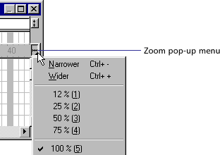
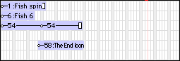
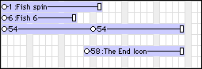
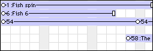

Using Director > Director basics > Introducing the Director workspace > Changing your view of the Score
Using Director > Director basics > Introducing the Director workspace > Changing your view of the Score |
Changing your view of the Score
To narrow or widen the Score, you change the zoom percentage. Zooming in widens each frame, which lets you see more data in a frame. Zooming out shows more frames in less space, and is useful when moving large blocks of Score data.
To change the zoom setting, do one of the following:
Choose View > Zoom and then choose an option. |
|
Choose an option on the Zoom pop-up menu to the right of the Score.
  |
|
Score zoomed out to 50%
 |
|
Score at 100%
 |
|
Score zoomed in to 200% |
You can also display more frames in a Score without changing the zoom setting. To do so, place a sprite in the rightmost frame of the score. Director will automatically display additional frames in the current view of the Score.